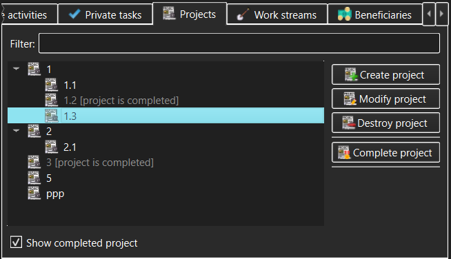

Projects view
The Projects view allows management of Projects (subject to access
permissions granted after login). These Projects are available to any user who
can login to a TimeTracker3 workspace.

The controls in the Projects view allow the user to access:
- Projects tree - this displays the tree of
available Projects. All Public Tasks will be visible to all users.
- Filter - type anything here to narrow the set of
displayed Projects or to quickly find a specific Project. The
filter match can appear anywhere within the Project name. If some
sub-project of a Project matches the filter but its parent Project does
not, the parent Project will still be displayed, but will be grayed out.
- Show completed projects - if un-checked, Projects
marked as "completed" will not appear in the Projects tree. An exception
to this rule is a "completed" Project that has an "un-completed"
sub-projects - such a "completed" parent will appear in the Projects tree
but will be grayed out and visually marked as "completed".
- Create project - use this button to create a new
Project.
This will only be permitted to someone with Administrator or Manage
Workloads
capability and will be disallowed in a read-only workspace.
- View/Modify project - use this button to view or modify
the Project currently selected in the Projects tree. The meaning of this
button (view or modify) will be determined by whether the current user has
logged in with Administrator or Manage Workloads capability and whether or not
the workspace is read-only.
- Destroy project - use this button to permanently destroy
the Project currently selected in the Projects tree. You will be asked to
confirm the destruction, as this is a dangerous operation in that it also
destroys all its sub-projects and all Work items and Events logged against that
Project and its sub-tasks will lose their attribution to the destroyed
Projects. The destroy confirmation
dialog that pops up will show just how much the recorded work history will be
impacted.
- Complete project - use this button to mark the
selected Project as "completed". NOTE that a "completed"
Project may be "un-completed" in order to resume working on it, but this
will require Administrator capability (i.e. the Manage Workloads
capability will not be sufficient). This ensures that the proper Project
workflow is observed but also allows taking care of e.g. erroneous or
accidental completion.
As well as action buttons, the Projects tree allows invoking the same actions
(create, modify, destroy or complete Projects) via the context menus that pop
up when the Projects tree items are right-clicked.
See also:
Create/Modify Project dialog,
Destroy
Project dialog